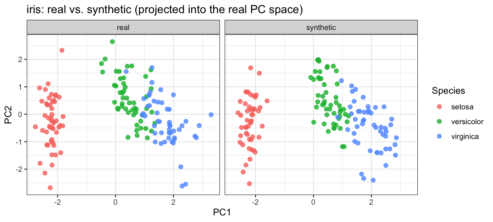

synthetica generates privacy-preserving synthetic copies of mixed-type tabular datasets via a Gaussian copula. It reproduces each variable’s marginal distribution (means, SDs, level frequencies, missingness) and the joint correlation structure of the data – without ever retaining a real participant row. The marginal of each quantitative column is stored as a quantile grid, never the raw vector, so synthetic output is safe to share even when the input is real participant data.
It was built to share realistic-but-synthetic copies of cohort ’omics datasets (Metabolon, Olink, Nightingale, SomaLogic), but it is general-purpose and works on any data.frame or numeric matrix.
Features
| Function | What it does |
|---|---|
simulate_dataset() |
Core Gaussian-copula simulator. Preserves marginals + correlations; baseline simulation, optional phenotype injection, and per-level fitting via stratify_by. |
add_batch_effect() |
Adds a synthetic technical batch factor (uniform or spike-and-slab per-feature shifts) for stress-testing batch-correction methods. |
add_group_effect() |
Adds a designed nominal grouping factor whose levels perturb features in their own directions – explicit (named list) or generative (spike-slab per level, scales to ’omics widths). |
simulate_longitudinal() |
Repeated-measures / panel data. Name an id and a time column; handles ChickWeight-style growth, before/after RCTs, and crossover trials. |
| Capability | Notes |
|---|---|
| Mixed column types | quantitative, whole-number integer, binary, categorical factors |
| Integer fidelity | whole-number columns stay integer (exact support for low-cardinality, quantile grid + rounding otherwise) |
| Discrete correlation fidelity | thresholded-normal recovery: tetrachoric / biserial (binary) and polychoric / polyserial (ordinal) |
| Missing data | reproduces the missingness pattern via a second Gaussian copula on the NA-indicator matrix |
| Privacy guardrails | quantile-grid marginals, rare-level collapse, near-constant / high-missing column drops |
| Phenotype injection | inject continuous, binary, or ordinal-categorical traits correlated with chosen features |
| Designed structure | technical batch effects and biological group effects as separable post-processors |
Quick start
Any mixed-type data.frame works – numeric, binary, factor, with or without NAs. Here we synthesise the classic iris dataset. Because the three species form well-separated clusters, we fit a separate copula per species with stratify_by so the within-species correlation structure is preserved.
library(synthetica)
syn <- simulate_dataset(iris, n = nrow(iris), seed = 42,
stratify_by = "Species", verbose = FALSE)
head(syn$data)
#> Sepal.Length Sepal.Width Petal.Length Petal.Width Species
#> 1 4.900000 3.000000 1.400000 0.2 setosa
#> 2 5.000000 3.300000 1.600000 0.2 setosa
#> 3 5.086181 3.284624 1.500000 0.2 setosa
#> 4 5.400000 3.800000 1.500000 0.2 setosa
#> 5 5.366146 3.102106 1.400000 0.2 setosa
#> 6 5.000000 3.243516 1.243057 0.1 setosaThe synthetic copy mirrors the input’s column types (including the Species factor) and per-group marginals, while leaking no real rows.
Real vs. synthetic structure
Projecting the synthetic measurements into the real principal-component space shows the synthetic data occupies the same manifold – the three species clusters are reproduced, not just the overall spread.
library(ggplot2)
num <- c("Sepal.Length", "Sepal.Width", "Petal.Length", "Petal.Width")
pca <- prcomp(iris[num], scale. = TRUE)
scores <- rbind(
data.frame(predict(pca, iris[num]), Species = iris$Species, source = "real"),
data.frame(predict(pca, syn$data[num]), Species = syn$data$Species, source = "synthetic")
)
ggplot(scores, aes(PC1, PC2, colour = Species)) +
geom_point(alpha = 0.8, size = 2) +
facet_wrap(~ source) +
labs(title = "iris: real vs. synthetic (projected into the real PC space)") +
theme_bw()
Learn more
-
vignette("intro", package = "synthetica")– the full guided tour (iris + a realistic Olink NPX proteomics example). -
?simulate_dataset– the privacy posture, phenotype injection, andstratify_byare documented in detail.
Privacy posture
The defaults are chosen so that output is safe to share even when the input is real participant data: a minimum cell size of 10, dropping columns above 90% missingness, near-constant column removal, and a 128-knot quantile grid for every quantitative marginal. See ?simulate_dataset for the full set of privacy knobs.